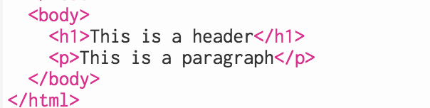
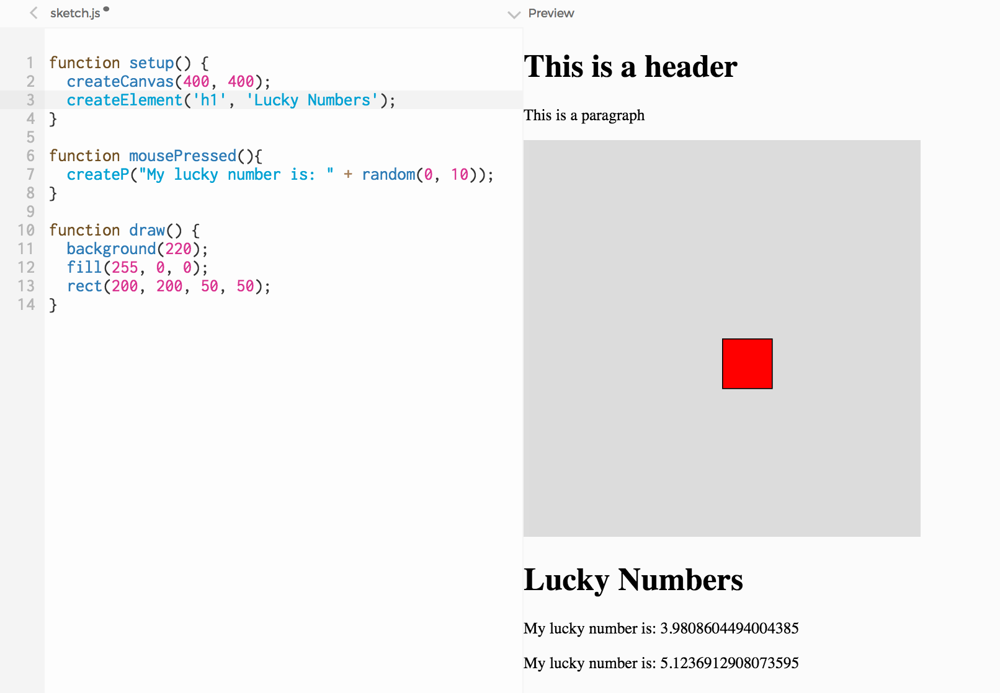
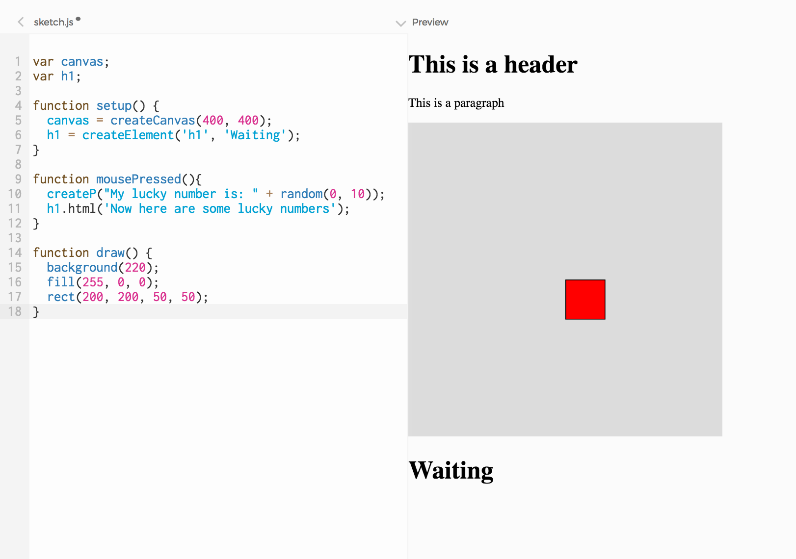
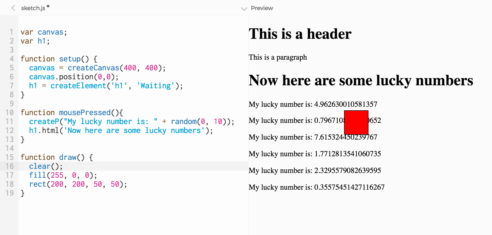
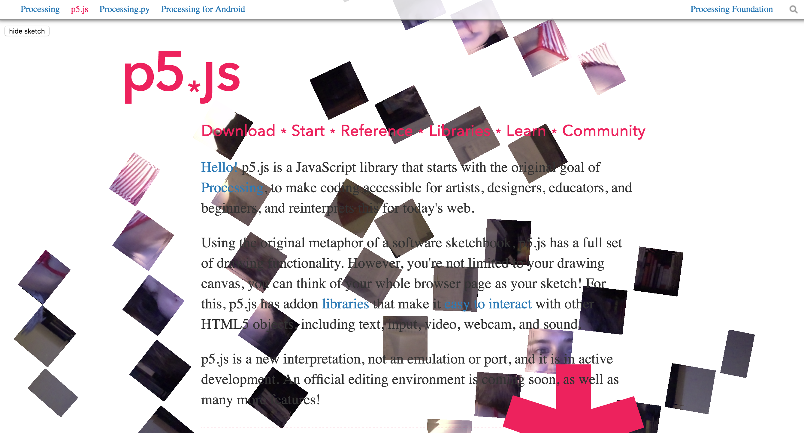

In the previous Learning Activity we used p5's create functions to insert HTML elements into the page from Javascript. In this Learning Activity we will manipulate these elements dynamically, while our sketch is running:
- We will change the content of an element (in particular, the text of a header)
- We will change the position of an element on the page (in particular, the position of the canvas)
In order to do this we will use the functions position and html, which are included in every p5 HTML object (p, h1, canvas, etc).
1. Keeping references to HTML elements
Let's start from where we left off. In the sketch from our previous Learning Activity we had an h1 and a p element, which we added directly to index.html:

Then we added more HTML elements to our page, using Javascript:
createCanvas generated a canvas (line 2 below),createElement added a second h1 element (line 3),createP added an extra paragraph with a random number in it each time the user clicked the mouse (line 7)
Sketch.js looked something like this:

One thing that we didn't look into, but that will be useful now, is the fact that every one of p5's create functions returns a Javascript object:
createCanvas returns an object containing all the information associated with the canvas element, like its position and size;createP returns an object containing all the information associated with the P element, like its position and content;createElement('h1', 'my lucky number is') returns an object containing all the information associated with the h1 element
Note: remember an object is like a package that contains variables and functions that are all related ––in LA 6.1, we created Bubble objects that contained the x and y position of each bubble, for example.
Now we want to access the h1 object when a user clicks on the page, and change its text from 'my lucky number is:' to 'my unlucky number is:'. We want to access the canvas object everytime we call the draw loop, and change its position, moving it to the right. In other words, we want to change HTML elements while our sketch is running.
We can do this if we store the objects p5 creates, holding information about our HTML elements, into variables in our code. Then we can access the objects after they have been created, and change their properties.
So let's start by declaring a couple of variables (lines 1 and 2), and then storing our canvas and h1 objects in them (lines 5 and 6).

Line 5 says "create a <canvas> element, and store all the information associated with it into a variable called canvas". Line 6 says "create an <h1> element and store all the information associated with it into a variable called h1".
Now that we have our DOM objects saved into our canvas and h1 variables, we can call their functions. DOM objects have many functions; today we will look into two of them: html() and position(). html() allows us to replace the content of an element with new content. position() allows us to change its position on the screen.
2. Changing the content of an element
Let's change our sketch so that our h1 element starts with the text "Waiting" and then, when the user clicks on the page, changes it to "Now here are some lucky numbers".
In order for h1 to start with "Waiting" as its content, we can simply change the argument we pass to the createElement function: createElement('h1', 'Waiting'); (line 6 on the code below).
To replace the content of h1, we can call the html() function: h1.html('Now here are some lucky numbers');(line 11).
The line above says "replace the current content of the h1 element with this new content: 'Now here are some lucky numbers'". We want this to happen when the user presses the mouse, we place the line inside of the mousePressed function. Here is the complete code:

Try it! When you click on the page, the text of the header will change.
3. Changing the position of an element
Now let's look into positioning. So far, we had an h1 element, then a p element, then a canvas, then another h1, then another paragraph
You might have noticed that the elements on an HTML page flow in an intuitive way, much like a document: each element added to the page is placed right below the previous element. This is the default way HTML elements are placed on a page, or the default flow of the page.
By using a DOM object's position function, it is possible for us to override this default positioning: we can set an HTML element to be placed on a specific position on the page, regardless of where other elements are placed. This is called absolute positioning.
Every DOM object in p5 (h1, p, canvas) has a position function: once we have variables referencing them, we can say canvas.position(100, 100), or p.position(120, 130), or h1.position(40, 60).
Let's start by placing the canvas on (0,0). Right below your createCanvas line, add this one: canvas.position(0, 0); and run your sketch.
As you can see in your sketch and the screenshot below, the (0, 0) coordinate is relative to the whole page: p5 places the canvas on the top left corner of the page, covering the h1 and the paragraph we had before. To prove this, try setting the size of the canvas to a smaller size, for example with createCanvas(100, 100)

Now we have some content following the default flow ––h1's and p's come one element after the other–– and some content with absolute positioning: the canvas is placed at the specific position of (0, 0), regardless of where the other elements are. In this case, it is drawn on top of them).
From this you can see that absolute positioning might not be ideal in some cases: elements might turn out to be drawn on top of other elements, covering them.
But absolute possitioning does allow us to do interesting and creative things. For example, if we replace background(220) (line 16) with clear(), we get a transparent background for the canvas. The canvas is still there, it occupies the same space, but because it is transparent we can see the elements that are behind it.

An interesting experiment might be to have an entire HTML page and overlay a transparent sketch over it. You might have seen this effect in action on the
p5js home page, which features a different sketch every month.

We can also have the default flow and absolute positioning coexist in some interesting way. In the example below, we set the background back to gray, and moved the canvas and the h1 to the bottom-right of the page.

Notice that we now have two coordinate systems to think of:
- The canvas is positioned at the coordinate (350, 400). That pixel coordinate is relative to the entire page.
- The red rectangle is positioned at the coordinate (200, 200). This location is relative to the top-left of the canvas. So even if we move the canvas to a different position, the rectangle will retain its position relative to the canvas.
Anything you draw on the canvas (with p5 drawing funcitons like rect, ellipse, etc), is positioned relative to the top-left corner of the canvas. All DOM elements (generated with create functions) are postioned relative to the top-left corner of the whole page.
4. Animating DOM elements
We have been animating elements on the canvas for a while: we have had rectangles move on lines, circles move at random, bubble objects tremble. All of this motion happened within our canvas element.
Now we added other HTML elements around our canvas. And we have also learned, in the previous step, how to change their position from our Javascript code. This means we can animate our headers, paragraphs and images as well, by updating their position within the draw loop. We can even animate the canvas itself.
How does this work? Remember we have an animation loop happening (the draw loop). For example, if we add a couple of variables:
var x = 100;
var y = 100;
, then place our rect in that position, and increment x by a random number (within the draw loop, which happens over and over and over), we get an animation inside the canvas.
rect(x, y, 50, 50);
x = x + random(-5, 5);
Since we have this animation loop, and we also have access to our DOM objects from it (because we saved them into variables when we created them), we can animate DOM objects as well.
Let's set the position of h1 to be the same as the rectangle's: (x, y). Where do you think h1 is going to be? Is it going to be on top of our red rectangle? Shouldn't it, since they are at the same position? It is not: remember rect is drawn on the canvas (positioned relative to the top left-corner of the canvas), and h1 is drawn on the page (positioned relative to the top-left corner of the whole page)
Try it to see what happens! Here is the complete code:
var canvas;
var h1;
var x = 100;
var y = 100;
function setup() {
canvas = createCanvas(400, 400);
canvas.position(350,400);
h1 = createElement('h1', 'Waiting');
}
function mousePressed(){
createP("My lucky number is: " + random(0, 10));
h1.html('Now here are some lucky numbers');
}
function draw() {
background(220);
fill(255, 0, 0);
rect(x, y, 50, 50);
h1.position(x, y);
x = x + random(-5, 5);
}
To recap: in Learning Activity 1, you added elements to the HTML page that holds your canvas. Then, in Learning Activity 2, you made HTML elements using Javascript. And in this Learning Activity you learned that you can animate those elements: in the same way that you used variables to animate circles and rectangles on the canvas, you now know that you can use variables to animate HTML elements on the page.
Exercise:
- 1. Add a circle to the sketch, and make it move. 2. Animate the canvas itself, by using
position. - 3. Change the content of DOM objects dynamically.